| Housing/Key Type |
 Math Explorer (TI-12) Math Explorer (TI-12) |
Explorer Plus (TI-32) |
TI-30Xa SE |
TI-34 |
| Description |
Simplest elementary calculator, each key has one function only, fraction focused |
Quite simple elementary calculator, has 2nd functions including some statistics, fraction focused |
Functionally identical to TI-30Xa, has 2nd functions, nice standard Xpanded scientific calculator |
Mid range scientific calculator, between 30 and 36, has 2nd and "Mode" functions, logic and number bases, Xpanded display |
| Boxy, keys with bump, large solar panels |
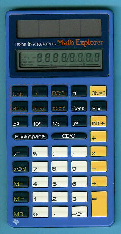 |
N/A |
N/A |
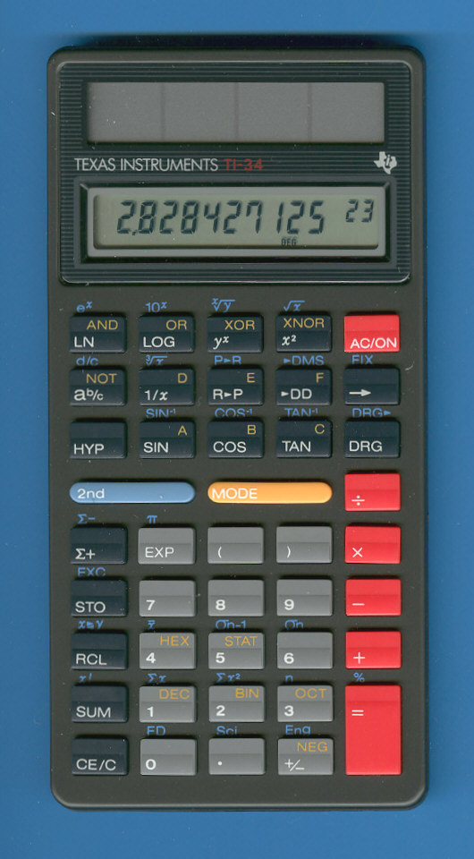
Red keys, striped bezel
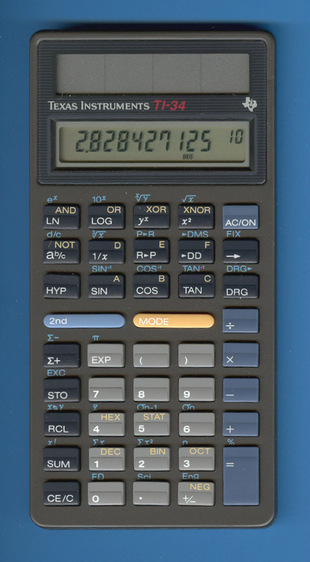
Blue keys, striped bezel |
| Boxy, flat keys, medium solar panels |
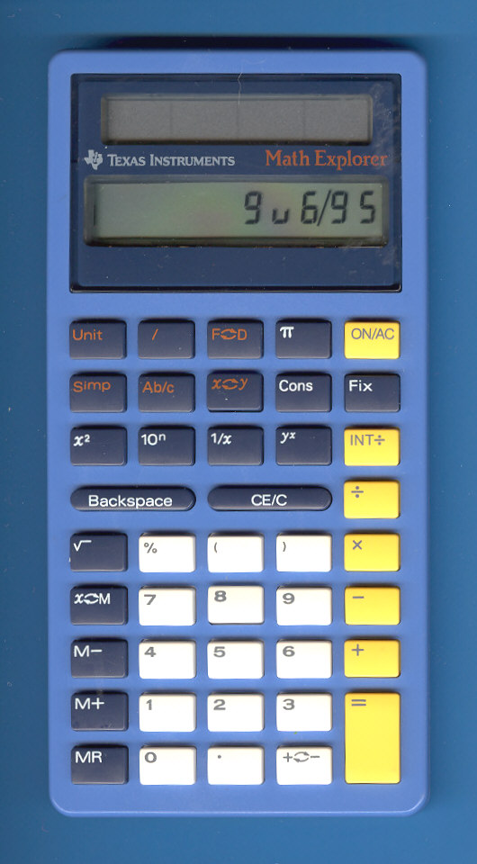
Text on top half of keys, bordered bezel |
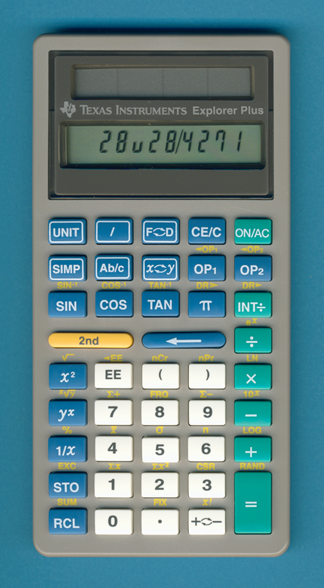Text in middle of keys, bordered bezel |
N/A |
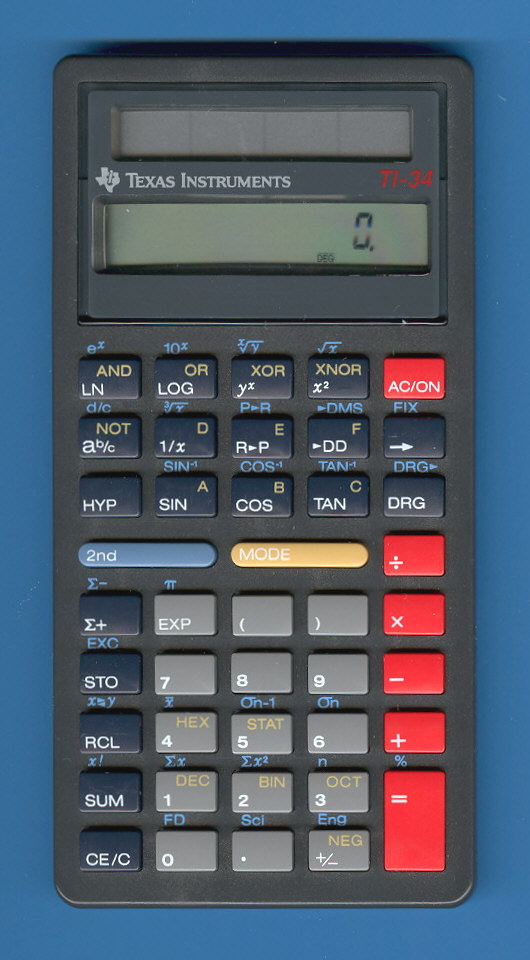
Red keys, bordered bezel |
| Boxy, flat keys, small solar panels |
N/A |
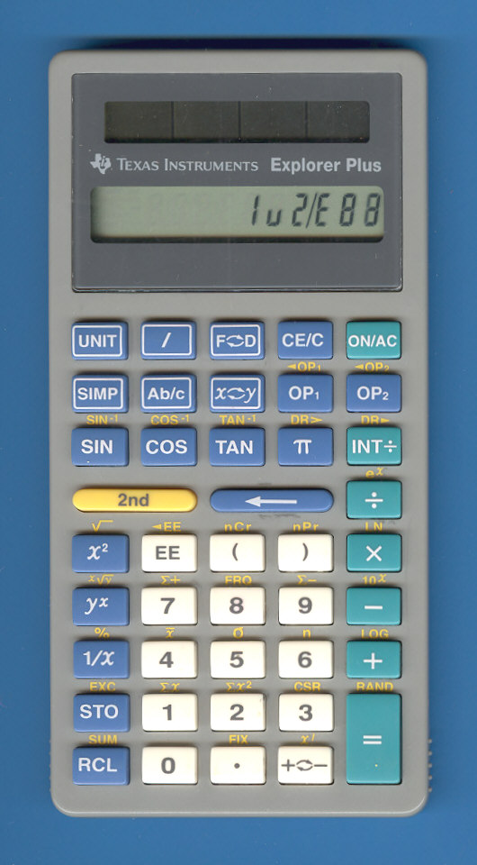
Text in middle of keys |
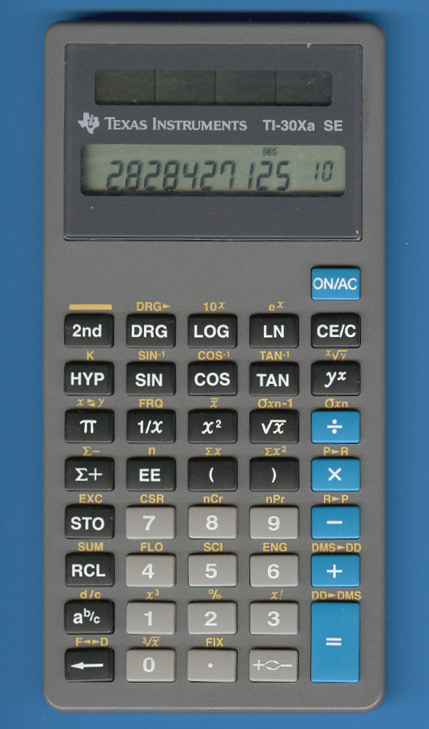
Text in middle of keys |
N/A |
| Boxy, keys with bump, small solar panels |
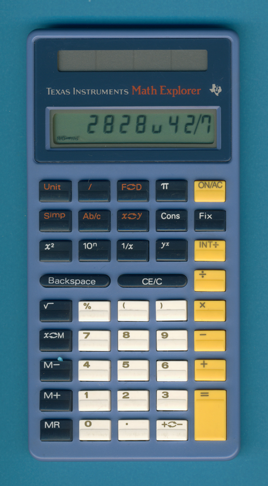
Text on top half of keys |
N/A |
N/A |
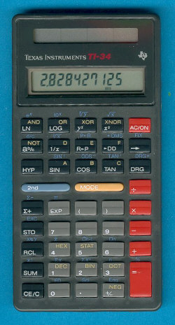
Red keys
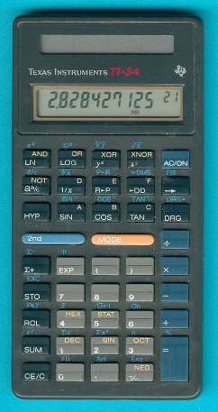
Blue keys |
| Weird smooth |
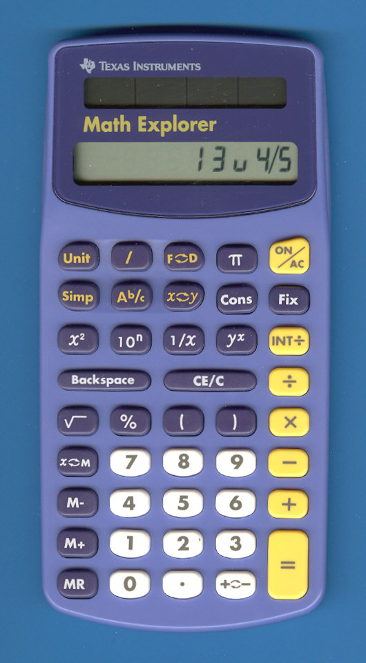 |
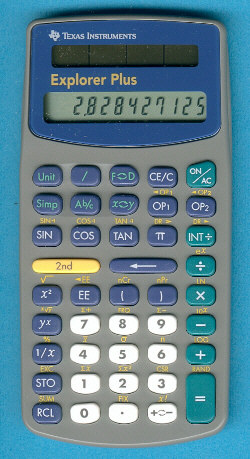 |
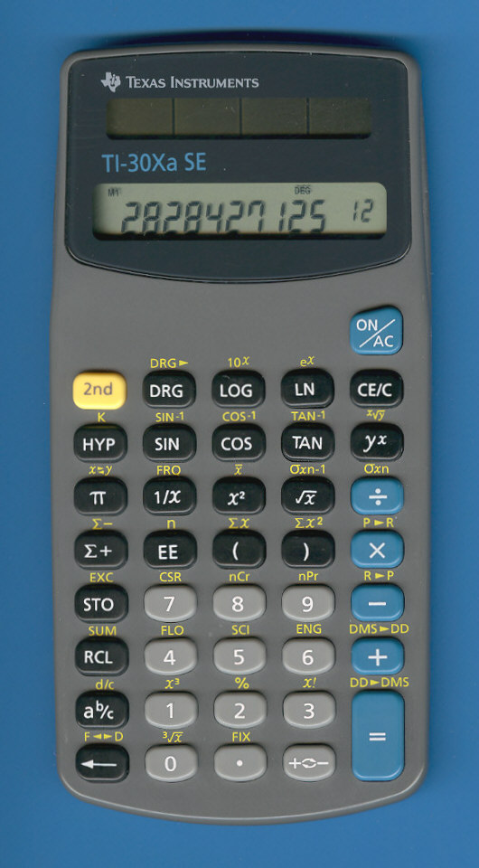 |
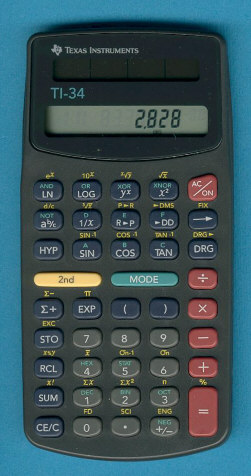 |
| Replaced By |
TI-15 (Explorer) |
TI-34 II (Explorer Plus) |
TI-30X IIS |
N/A |